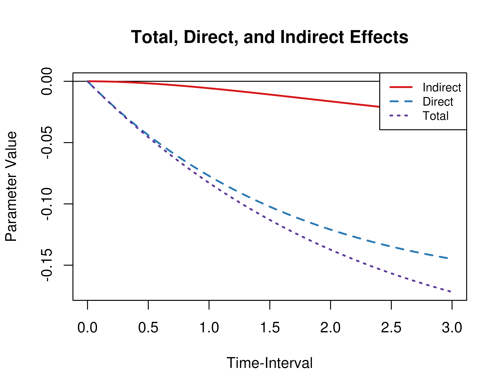

Summary of CT-VAR Estimates
summary(fit)
#> Coefficients:
#> Estimate Std. Error t value ci.lower ci.upper Pr(>|t|)
#> phi_11 -0.0335015 0.0115834 -2.892 -0.0562045 -0.0107985 0.00192 **
#> phi_12 0.0378995 0.0190828 1.986 0.0004979 0.0753011 0.02352 *
#> phi_13 -0.0132453 0.0170977 -0.775 -0.0467563 0.0202656 0.21927
#> phi_21 -0.1517373 0.0314688 -4.822 -0.2134150 -0.0900596 < 2e-16 ***
#> phi_22 -0.5861297 0.0908420 -6.452 -0.7641768 -0.4080827 < 2e-16 ***
#> phi_23 0.2282876 0.0585998 3.896 0.1134340 0.3431411 5e-05 ***
#> phi_31 -0.1003889 0.0291247 -3.447 -0.1574722 -0.0433056 0.00028 ***
#> phi_32 0.1040908 0.0551386 1.888 -0.0039789 0.2121605 0.02954 *
#> phi_33 -0.5118440 0.0752570 -6.801 -0.6593451 -0.3643429 < 2e-16 ***
#> sigma_11 0.0579308 0.0119040 4.867 0.0345995 0.0812621 < 2e-16 ***
#> sigma_12 -0.0086746 0.0154201 -0.563 -0.0388974 0.0215483 0.28688
#> sigma_13 0.0102638 0.0145734 0.704 -0.0182996 0.0388271 0.24063
#> sigma_22 0.7424345 0.1621833 4.578 0.4245610 1.0603081 < 2e-16 ***
#> sigma_23 0.1011136 0.0425308 2.377 0.0177547 0.1844725 0.00872 **
#> sigma_33 0.8388809 0.1509879 5.556 0.5429501 1.1348116 < 2e-16 ***
#> theta_11 0.1054679 0.0086864 12.142 0.0884428 0.1224929 < 2e-16 ***
#> theta_22 0.1752225 0.0508289 3.447 0.0755996 0.2748453 0.00028 ***
#> theta_33 0.0815182 0.0474585 1.718 -0.0114988 0.1745351 0.04294 *
#> ---
#> Signif. codes: 0 '***' 0.001 '**' 0.01 '*' 0.05 '.' 0.1 ' ' 1
#>
#> -2 log-likelihood value at convergence = 13453.10
#> AIC = 13489.10
#> BIC = 13626.78
varnames <- c(
"phi_11",
"phi_21",
"phi_31",
"phi_12",
"phi_22",
"phi_32",
"phi_13",
"phi_23",
"phi_33"
)
phi <- matrix(
data = coef(fit)[varnames],
nrow = 3
)
colnames(phi) <- rownames(phi) <- c(
"conflict",
"knowledge",
"competence"
)
vcov_phi_vec <- vcov(fit)[varnames, varnames]
Direct, Indirect, and Total Effects of a Time-Interval of One
library(cTMed)
Med(
phi = phi,
from = "conflict",
to = "competence",
med = "knowledge",
delta_t = 1
)
#>
#> Total, Direct, and Indirect Effects
#>
#> interval total direct indirect
#> [1,] 1 -0.0828 -0.0772 -0.0057
Direct, Indirect, and Total Effects of a Time-Interval of Zero to
Three
med <- Med(
phi = phi,
from = "conflict",
to = "competence",
med = "knowledge",
delta_t = seq(from = 0, to = 3, length.out = 1000)
)
plot(med)
